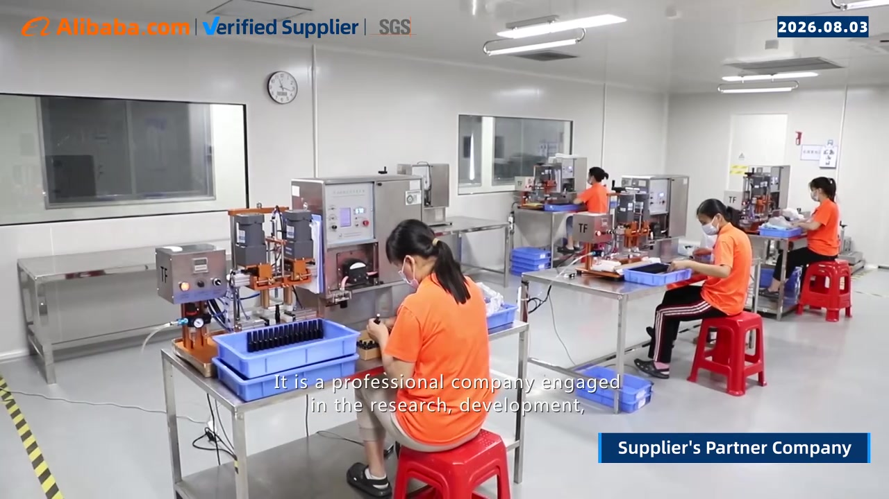
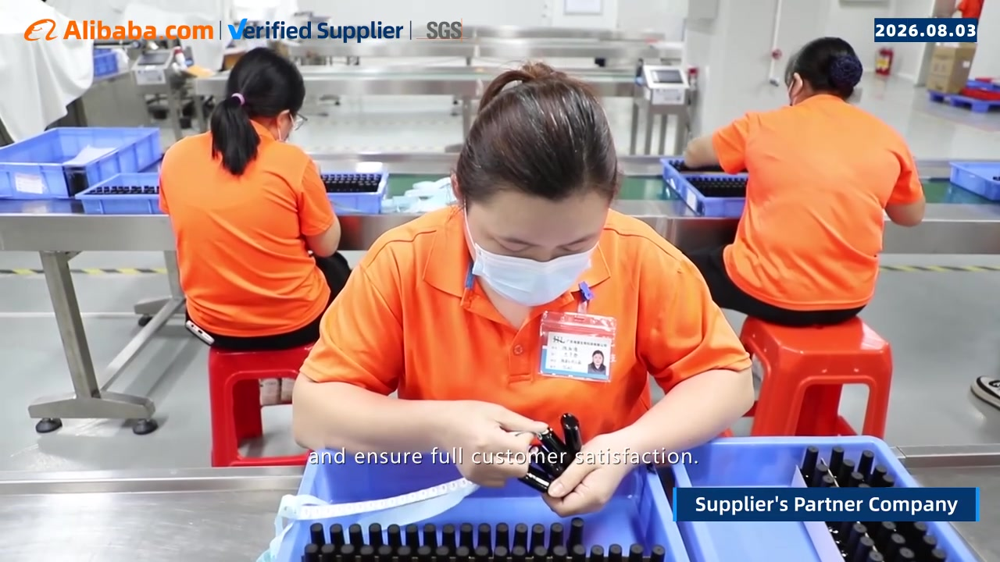

1. Verify the business and transaction parties
Request the legal business name, registration information, manufacturing address and the contracting entity. Reconcile these with quotation and payment details. If an exporter, trading company or affiliate is involved, ask for its role and relationship in writing. A different entity is a question to resolve, not automatic proof of wrongdoing.
2. Establish what the supplier actually manufactures
Discuss the exact category you plan to buy. Ask which stages happen on site: development, mixing, filling, decoration, packing and storage. Identify outsourced stages and how they are controlled. A supplier's capability in gel polish does not automatically establish the same capability in lamps or other accessories.
{kind=link}

3. Review relevant evidence
| Assessment area | Evidence to request | Follow-up question |
|---|---|---|
| Product capability | Identified samples and technical specifications | Can the approved features be measured and reproduced? |
| Manufacturing | Process walkthrough and relevant records | Which site and processes apply to my order? |
| Quality control | Incoming, batch and packing checks; issue records | Who can place an order on hold? |
| Traceability | Links between material lots, batch IDs and shipment | Can an affected batch be located after shipment? |
| Documents | Product-specific documents and verifiable certificate scope | Do the site, category and validity match? |
| Packaging | Assembled sample and compatibility evidence | Who controls component or artwork changes? |
| Commercial terms | Itemized quotation and written order conditions | What happens if the approved specification is missed? |
{kind=link}

4. Compare samples using one brief
Send each shortlisted supplier the same requirements and use the same review conditions. Record differences in sample identity, performance, packaging and documentation. Ask how production references are retained and how batch variation is controlled.
Start with an order scope you can evaluate and inspect. A successful sample is useful evidence, but it does not establish future batch consistency without production controls.
5. Clarify the order terms
Agree on product and component MOQs, costs, payment milestones, sample approvals, production timing, shipping terms with a named place, and document responsibilities. State how shortages, defects, delays and proposed substitutions will be investigated and resolved.
If a bank-detail change is received, verify it through an established contact channel before acting. Keep commercial changes attached to the order record.
6. Make an evidence-based selection
Mark each area as verified, open or unacceptable, with the supporting record and an owner for follow-up. Give more weight to the requirements that matter for your product and market. Do not let an attractive score override unresolved identity, safety or legal issues.
Common questions
Is a factory video enough? It helps explain a process, but it does not prove every claim or show that the same site will handle your order.
Does a certificate cover every product? Check its issuer, site, scope, validity and relevance to the product. Do not infer blanket product approval.
How should I compare quotations? Compare the same formula requirements, fill, packaging, quantities, testing scope and shipping terms.